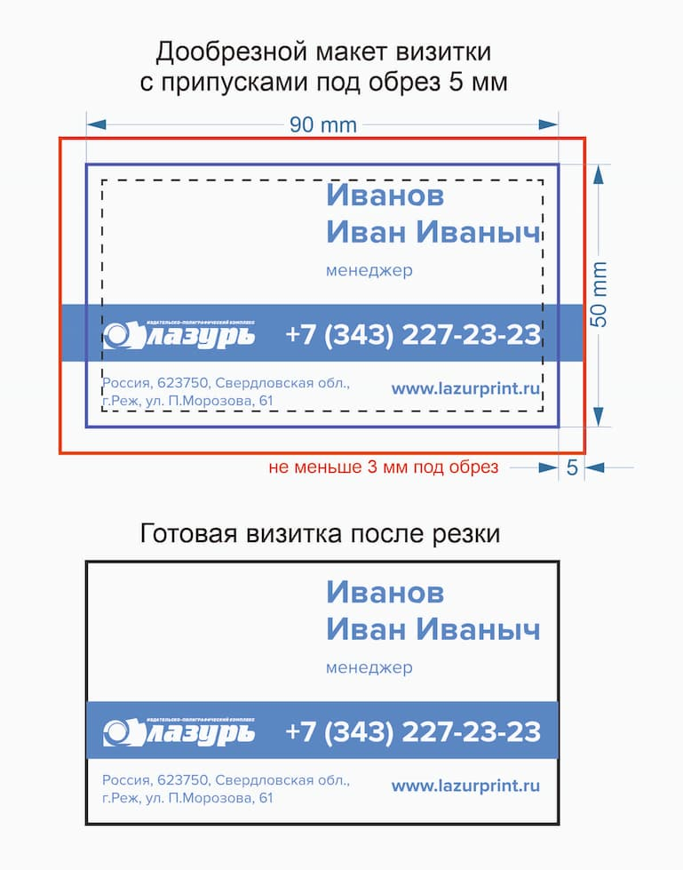
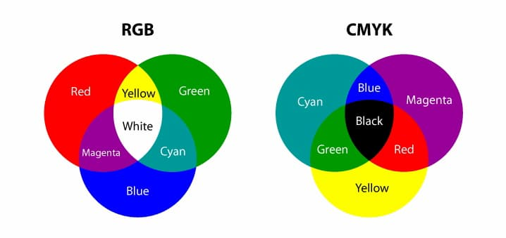
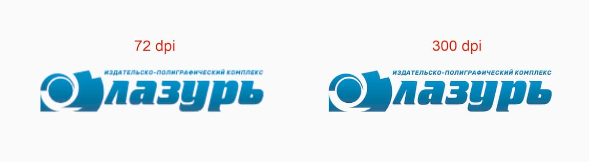
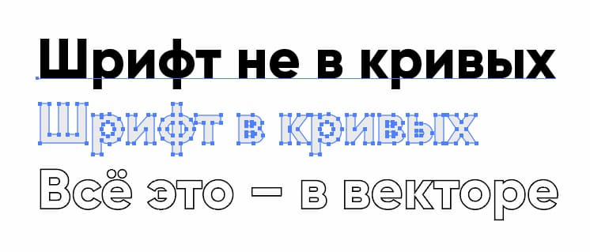
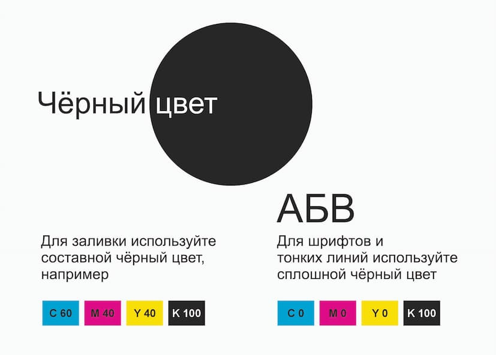

Перед подготовкой файлов для печати необходимо ознакомиться с техническими требованиями. Строгое соблюдение техтребований избавит Вас от большинства ошибок, существенно облегчит Вашу работу по передаче макета в типографию, а также предупредит появление брака в процессе печати в связи с некорректной подготовкой файлов.
Вопросы по техтребованиям и неоднозначное их понимание необходимо урегулировать строго до сдачи файлов с отделом предпечатной подготовки (СиТиПи). Свяжитесь с Вашим менеджером в типографии для получения такой консультации.
Далее рассмотрим основные часто встречающиеся ошибки и пути их решения.
Несоответствие размеров макета заявленному формату, т.е. когда размер листа в макете отличается от обрезного формата изделия. Чаще всего такая ситуация возникает при неточной передаче информации между заказчиком макета, дизайнером и типографией.
Как избежать: Необходимо согласовать готовый размер изделия перед началом работы по вёрстке, и размер издания необходимо оговорить именно в миллиметрах (ширина/высота). Золотое правило – начинайте работу по вёрстке макетов для офсетной печати с указания размера страницы в публикации, который будет совпадать с размером готового издания, далее помечаем поля для припусков (наружу от линии реза) и поля для безопасного размещения важных объектов (внутрь от линии реза).
Припуски (вылеты под обрез) - это та часть макета, которая срезается при резке изделия в нужный формат.
Погрешность в резке может возникнуть даже на суперсовременном оборудовании. И чтобы избежать порчи печатного изделия, припуски необходимы. Линия реза не должна совпадать с какими-либо визуальными границами в дизайне.
В нашей типографии для всех типов работ припуски должны быть по 5 мм с каждой стороны. То есть изображение в макете необходимо вывести за край печатного поля на 5 мм. Если этого не сделать, даже незначительный сдвиг ножа при резке приведет к возникновению белой полоски по краю листа.
Любые ключевые позиции (текст, логотипы, мелкие элементы и т.п.) должны располагаться на расстоянии не менее 3 мм от обрезного края для листовой продукции и 5 мм - для журнальной продукции.

Как избежать: вторым действием после задания размера страницы в программе вёрстки, помечайте для себя поля для припусков необходимого размера, и верстайте макет сразу с учётом припусков, не откладывайте «вытягивание» припусков на последний этап создания макета.
Все элементы макета должны иметь один цветовой профиль CMYK, т. к. печать в типографии производится только в данной цветовой модели (четырьмя красками: Cyan, Magenta, Yellow, Black). Дело в том, что экран компьютера воспроизводит практически любой цвет (используется палитра RGB – Red, Green, Blue), а печатная машина - нет. Можно создать красочный шедевр в RGB, но в процессе печати результат может сильно отличаться от того, что было изначально на экране. Поэтому, чтобы сделать максимальное соответствие цветов переводим RGB в CMYK.

Как избежать: верстайте макет сразу в палитре CMYK. Объекты, которые готовите в других программах (не в той программе, где верстаете конечный макет) передавайте на конечную вёрстку в палитре CMYK.

Как избежать: пользуйтесь качественными клип-артами и фото. Не нужно скачивать фото в формате JPG из интернета и вставлять их в макет, так как чаще всего такие картинки плохого качества и имеют низкое разрешение. Формат JPG использует сжатие, которое искажает изображение, и при печати оно будет выглядеть пиксельным или размытым. Используйте исходные фото нужного вам размера с разрешением 300dpi и более. Не стоит растягивать маленькую картинку до большего размера, т. к. при этом значительно уменьшается её разрешение.
Сегодня существует огромное количество шрифтов. И те шрифты, которые вы использовали в макете, не всегда могут быть у типографии. Чтобы ваш макет гарантированно корректно открылся на другом компьютере, неважно, есть на нем такие же шрифты или нет, необходимо перевести их в кривые.
Шрифты, которые переведены в кривые, - это, по сути, контурный рисунок, в котором уже нельзя что-то дописать или убрать.

Как избежать: советуем вам сохранять два макета - обычный и с переводом шрифтов в кривые, и передавать в типографию вариант в кривых.
Весь основной чёрный текст должен состоять из одной чёрной краски (К100) и находиться на контрастном фоне. Также это правило действует и для тонких чёрных линий, используемых в дизайне и вёрстке. Если текст или линия будет состоять из нескольких красок, то при печати краски не будут иметь одинаковые границы в одной объекте (букве), т. к. имеют разную текучесть. И в результате на печати получим текст (объект) с нечёткими расплывчатыми краями, к тому же края могут «светиться» разными красками.

Как избежать: задавайте шаблоны используемых в макете цветов для текста и разных объектов до начала вёрстки, не верстайте текст в палитре RGB, т. к. в этом визуально он выглядит чёрным, но при делении в CMYK расходится по всем четырём краскам. Проверяйте готовый макет на составной чёрный текст путём отключения видимости чёрного канала, если текст пропадает — значит он покрашен в одну чёрную краску.
Это конечно смешно, но не так редки – книги в Ворде, коробки в Фотошопе, плакаты в Автокаде и тд.
Если в работу поступает такой файл, выходов, как обычно, два – брать или не брать. Если не брать, объясняется почему. Достаточно формулировки - макет не соответствует техническим требованиям. Если брать, опять же объясняется, что такой файл следует приравнять в лучшем случае к сырому, требующему полной переделки, а в худшем – к принтерной распечатке; соответственно, переделка повлечет за собой дополнительные финансовые и временные затраты, требующие их компенсации. Прежде чем решить, браться за такую задачу или нет, оценивается, можно ли в принципе добиться достаточного качества из имеющихся материалов и реальны ли сроки. Выясняется у клиента, нет ли у него тех же изображений в других форматах (возможно, они у него есть, просто ему в голову не приходит, что проблема решается так просто).
Как избежать: пользуйтесь программами, предназначенными непосредственно для работы с полиграфией (напр. CorelDraw, Adobe Photosop, Adobe Illustrator, и др.). Макеты, сделанные в программах пакета Microsoft Office (Word, Excel, PowerPoint, Publisher) как правило, не подходят для высококачественной печати и не являются готовыми макетами. Передавайте в типографию файлы в формате PDF, экспорт в этот формат из программы вёрстки можно тонко настроить, что позволит избежать многих ошибок и обеспечит быструю и намного менее трудоёмкую проверку и обработку файлов типографией.
Перед отправкой файлов в типографию обязательно проверяйте, что вы отправляете, нередки случаи, когда PDF-файлы для печати отправляются «вслепую», а при экспорте не были указаны верные настройки по припускам, цветности и т. д. Правильная подготовка файлов для печати требует внимательности и следования определенным правилам. Избегая распространенных ошибок и следуя рекомендациям по исправлению, вы сможете добиться идеального результата и получить качественные печатные материалы, которыми будете гордиться.